title: K近邻算法的实现
tpye: post
data: 2019/4/29
categories: 机器学习
k 临近算法，是机器学习（监督学习）的一种经典的分类算（当然也能解决其他的一些问题，例如线性回归）
官方解释：存在一个样本数据集，也称作训练样本集，并且样本中每个数据都存在标签，即我们知道样本集中每一数据与所属分类的对应关系，输入没有标签的新数据后，将新数据的每个特征与样本集中的数据对应的特征进行比较，然后算法提取样本集中特征最相似的数据（最近邻）的分类标签。一般来说，我们只选择样本集中前 k 个最相似的数据，这就是 k-近邻算法中 k 的出处，通常 k 是不大于 20 的整数，最后，选择 k 个最相似的数据中出现次数最多的分类，作为新数据的分类。
我的理解：将原有样本集视为一个模型（KNN 非常特殊，可以视为没有，为了和其他模型统一，我把原本的数据集理解为一个模型），对于来一个样本，把他放在原数据集中，从它临近的类别来判断它的类别，就好像一朵花周围都是鸢尾花，那这朵花大概率也是鸢尾花（当然鸢尾花也有各种类别，下文就将拿鸢尾花这个经典的数据集来测试我们实现的 K 近邻算法），这里的 K 就是考虑的近邻的个数，是一个超参数。而算法的目的就是找出目标样本最近的 K 个样本，分析各个样本的类别，来决定样本的类别。
这里，我们使用 sklearn 封装好的数据集。
sklearn 的数据集有好多个种
其中自带的小数据集中有
这些数据集都可以在官网上查到，以鸢尾花为例，可以在官网上找到 demo，http://scikit-learn.org/stable/auto_examples/datasets/plot_iris_dataset.html
我们使用鸢尾花的数据集
from sklearn import datasets
iris=datasets.load_iris()
使用iris.key()我们可以看到输出了
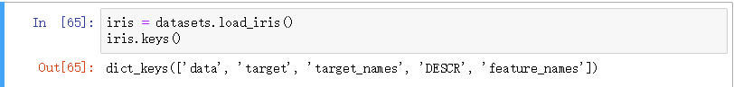
DESCR是特征的描述
feature_names是特征的名字
data是特征数据
target_names是类别的名称
target在此数据集中是鸢尾花的类别
方便后面操作，我们令
X = iris.data
y = iris.target
可以看到：
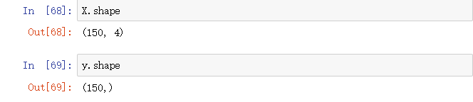
这个数据集有 150 个样本，4 个特征，可以看到，X 与 Y 的数目是对应的
关于这个数据集的详细内容，可以通过print(iris.DESCR)
来查看，详细内容在 sklearn 官网都有
OUTPUT：
.. _iris_dataset:
Iris plants dataset
--------------------
**Data Set Characteristics:**
:Number of Instances: 150 (50 in each of three classes)
:Number of Attributes: 4 numeric, predictive attributes and the class
:Attribute Information:
- sepal length in cm
- sepal width in cm
- petal length in cm
- petal width in cm
- class:
- Iris-Setosa
- Iris-Versicolour
- Iris-Virginica
:Summary Statistics:
============== ==== ==== ======= ===== ====================
Min Max Mean SD Class Correlation
============== ==== ==== ======= ===== ====================
sepal length: 4.3 7.9 5.84 0.83 0.7826
sepal width: 2.0 4.4 3.05 0.43 -0.4194
petal length: 1.0 6.9 3.76 1.76 0.9490 (high!)
petal width: 0.1 2.5 1.20 0.76 0.9565 (high!)
============== ==== ==== ======= ===== ====================
:Missing Attribute Values: None
:Class Distribution: 33.3% for each of 3 classes.
.....
首先，K 近邻算法需要找到离预测样本最近的 K 个样本，那么我们就需要先明确什么是距离
对于大部分人来说，我们最熟悉就是欧拉距离了
$$\sqrt[2]{\sum_{i=0}^N(x_i^{(a)} - x_i^{(b)})^2}$$
将指数改为 1，我们就得到了曼哈顿距离
$$\sum_{i=0}^N\ |x_i^{(a)} - x_i^{(b)}|$$
读到这里，大家或许在想，为什么我们不干脆改成 n？没错，这时候我们得到了明可夫斯基距离，同时获得了一个超参数 n
$$\sqrt[n]{\sum_{i=0}^N(x_i^{(a)} - x_i^{(b)})^n}$$
下面的代码实现，我用大家都比较熟悉的欧拉距离实现
import numpy as np
from math import sqrt
from collections import Counter
class KNNClassifier:
def __init__(self, k):
"""初始化kNN分类器"""
assert k >= 1, "k must be valid"
self.k = k
"""需要注意的是，因为kNN是典型的非参数\
学习算法，对于这个算法，我们需要有成员\
来储存已有的数据"""
self._X_train = None
self._y_train = None
def fit(self, X_train, y_train):
"""根据训练数据集X_train和y_train训练kNN分类器"""
assert X_train.shape[0] == y_train.shape[0], \
"the size of X_train must be equal to the size of y_train"
assert self.k <= X_train.shape[0], \
"the size of X_train must be at least k."
self._X_train = X_train
self._y_train = y_train
return self
def predict(self, X_predict):
"""给定待预测数据集X_predict，返回表示X_predict的结果向量"""
assert self._X_train is not None and self._y_train is not None, \
"must fit before predict!"
assert X_predict.shape[1] == self._X_train.shape[1], \
"the feature number of X_predict must be equal to X_train"
y_predict = [self._predict(x) for x in X_predict]
return np.array(y_predict)
def _predict(self, x):
"""给定单个待预测数据x，返回x的预测结果值"""
assert x.shape[0] == self._X_train.shape[1], \
"the feature number of x must be equal to X_train"
distances = [sqrt(np.sum((x_train - x) ** 2))
for x_train in self._X_train]
nearest = np.argsort(distances)
topK_y = [self._y_train[i] for i in nearest[:self.k]]
votes = Counter(topK_y)
return votes.most_common(1)[0][0]
def accuracy_score(y_true, y_predict):
'''计算y_true和y_predict之间的准确率'''
assert y_true.shape[0] == y_predict.shape[0], \
"the size of y_true must be equal to the size of y_predict"
return sum(y_true == y_predict) / len(y_true)
def score(self, X_test, y_test):
"""根据测试数据集 X_test 和 y_test 确定当前模型的准确度"""
y_predict = self.predict(X_test)
return accuracy_score(y_test, y_predict)
def __repr__(self):
return "KNN(k=%d)" % self.k
这里做一个操作，将原先的数据集 X 和 y 按照 0.2 分割成 X_train, X_test, y_train, y_test
（len(x_train) = 0.8 *len(x)）,方便后面对我们的算法进行简单的测试
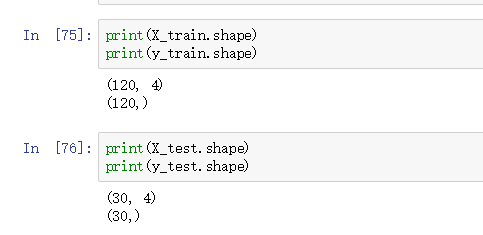
代码就不贴在这了，有兴趣的读者可以访问我的 github 查看
我们先声明一个我们封装的类的对象，
再调用 fit 函数训练
my_knn_clf = KNNClassifier(k=3)
my_knn_clf.fit(X_train,y_train)
直接调用我们写的 predict 函数
y_predict=my_knn_clf.predict(X_test)
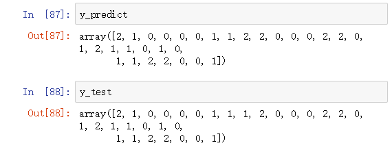
对于鸢尾花这个数据集，最简单的计算计算计算正确率的方法就是与原数据中的 y 比较，一样则分类正确。我们将其加起来，再除以分母，就得到了一个简单的评判标准。
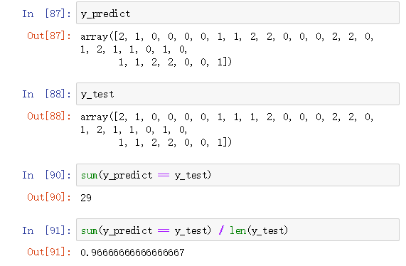
sklearn 是一个机器学习的库，封装了许多机器学习算法，我们可以直接通过调库来使用相关的算法
我们通过from sklearn.neighbors import KNeighborsClassifier来加载 sklearn 封装的 KNN 分类器
然后与上面的操作相同，我们先声明对象，再调用它封装的 fit 函数训练
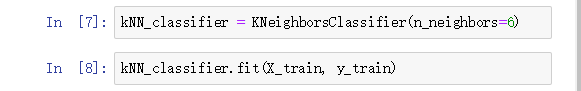
同样，sklearn 也为分类器封装了 predict 函数，我们可以直接调用 predict 函数来对预测样本进行分类
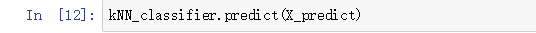
我们调 sklearn 封装的 score 函数来测试算法的正确率
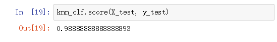
当然，sklearn 对 score 函数的实现方式不同，所以评价标准也不同，虽然我们自己实现的 kNN 比 sklearn 的 kNN 得分高，但我们不能说我们的算法比 sklearn 封装的算法好，因为评判标准是不一样的。实际上，如何选择出对于当前问题最合适的算法，也是机器学习的一个难题
超参数的调节是机器学习的一个重要问题，下面举了几个我们实现的算法中出现的超参数，对于如何获取这些超参数的最优值，我会用一些比较简单但时间复杂度可能稍高的方法，其他方法请有兴趣的读者们自行查找
这里对于超参数的搜索，我们使用 sklearn 封装的 KNN 算法.
最明显的超参数，就是我
们要搜索的近邻的个数 k，到底要检测周围多少个点，才能是我们的算法得到最好的正确率？
sklearn 中使用的变量名为 n_neighbor
我们可以简单地写一个 for 循环测试一下
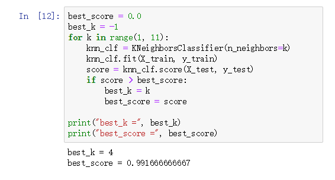
可以看到这里显示最好的 k 是 4，而准确率是 0.99166…..
我们的算法寻找 k 个最近的近邻的标签进行比较，那么距离的远近是否需要考虑呢？比如距离大一点的样本，对预测的样本的影响比较小，那我们可以给一个比较小的权值，距离比较小的我们就可以给一个较大的权值
sklearn 中对于是否考虑距离，使用变量 weight，值为 unifrom（不考虑）和 distance（考虑）
我们同样使用 for 循环进行简单的搜索
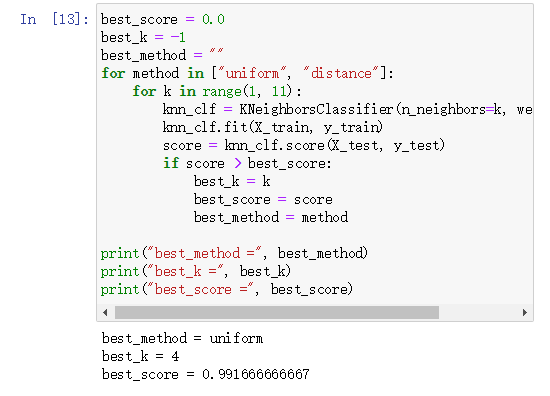
sklearn 中对于明可夫斯基距离相应的 n 使用变量 p 表示，同样我们使用一个 for 循环搜索
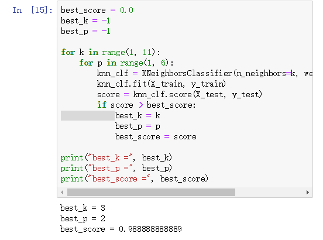
可以查看 sklearn 官网对于 KNN 的算法的手册
http://scikit-learn.org/stable/modules/generated/sklearn.neighbors.DistanceMetric.html